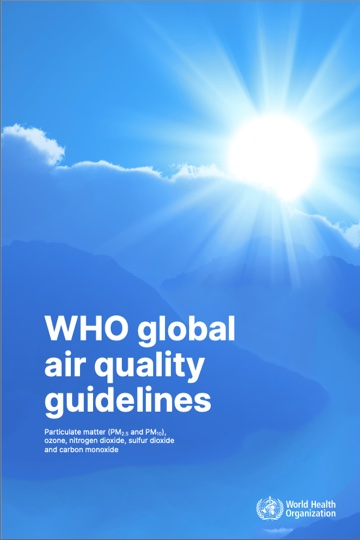
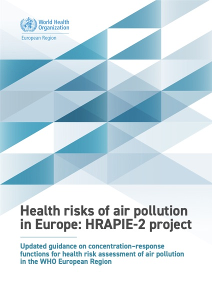

Long-term panel: from “× WHO” to relative risk
What the Long-term panel shows today, what WHO (including WHO Europe’s 2025 HRAPIE-2 update) and COMEAP recommend for comparing long-term exposure across pollutants, and how each pollutant’s bar would change. All patient values are the prototype mock patient unless a monitoring site is named.
- The Long-term panel shows each pollutant as a multiple of its WHO guideline (3.6×, 1.9×…). A multiple is an exceedance signal, not a health scale: the guidelines sit at very different concentrations and each pollutant has a different strength of link to mortality.
- WHO expresses long-term health effects as a relative risk per 10 µg/m³ (the concentration–response function, CRF). Applying each pollutant’s own CRF gives % higher long-term mortality than in air at the WHO guideline, which can be compared pollutant by pollutant.
- We use the RRs from WHO Europe’s HRAPIE-2 (2025), built on updates of the reviews behind WHO 2021:
- PM₂.₅ – 1.10
- PM₁₀ – 1.08
- NO₂ – 1.05
- Ozone – 1.05 (respiratory deaths only)
- On that scale PM₂.₅ leads: the mock patient’s 3.6× becomes about +13%; NO₂’s 2.2× becomes about +6%.
- Ozone is the biggest problem. We divide an annual mean by a peak-season guideline, which understates it (Honor Oak Park reads 0.77× WHO; the station’s peak season is 1.42×). Decision: calculate peak season, compare with WHO’s 60, and apply HRAPIE-2’s 1.05 with a caveat: that RR is for respiratory deaths, was derived on a different annual metric, and is weaker evidence.
- PM₁₀ contains PM₂.₅, and we always have PM₂.₅, so PM₁₀ comes off the Long-term panel, as HRAPIE-2 advises. Each percentage stands on its own; HRAPIE-2 gives an adjusted method if a combined PM₂.₅ + NO₂ figure is wanted.
What we do now
For each pollutant we take the exposure service’s annual mean at the patient’s address and divide it by the WHO guideline. The bar fills to the dotted WHO line, then the excess above the line is scaled so the pollutant with the largest multiple fills the top.
Why a multiple is not enough
- The same multiple means very different amounts of pollution. For PM₂.₅, 1.3× WHO is only 1.5 µg/m³ above the guideline. For O₃, 1.3× is 18 µg/m³ above the guideline.
- Each pollutant has a different concentration–response function. Per microgram, PM₂.₅ is about twice as dangerous as NO₂ for all-cause mortality. Ozone’s per-microgram figure is similar to NO₂’s, but it covers respiratory deaths only, not all-cause mortality. The multiple does not reflect this.
- Ozone is currently compared on the wrong metric. The WHO guideline ozone figure (60 µg/m³) is a peak-season value; the exposure service (LAEI) returns an annual average, which is about 1.5× lower than a peak-season calculation.
What WHO and the research recommend
WHO and the UK Committee on the Medical Effects of Air Pollutants (COMEAP) quantify long-term effects with a concentration–response function (CRF), usually quoted as the relative risk (RR) per 10 µg/m³.
Relationship between CRF and RR
The CRF is the rule linking concentration to risk across the whole range: its shape and how fast risk rises. The RR is one reading from that rule: how much higher the risk is at one concentration than at another. For long-term mortality, WHO, HRAPIE-2 and COMEAP use a log-linear CRF, so each extra 10 µg/m³ multiplies risk by the same factor. That shape is described by one number, which is why the reports quote “RR 1.10 per 10 µg/m³” for PM₂.₅. (Cohort studies report hazard ratios; for this purpose they mean the same thing.)
WHO global air quality guidelines (2021)
The WHO global air quality guidelines (2021) set the guideline levels the patient long-term panel compares against.
Chapter 3 quotes a
long-term RR for each pollutant from systematic reviews completed in 2020: Chen & Hoek for particles, and Huangfu & Atkinson
for NO₂ and ozone. COMEAP’s UK recommendation for PM₂.₅ (2022) uses the same 1.08.

| Pollutant | WHO guideline | Long-term RR per 10 µg/m³ | Outcome · metric | Source |
|---|---|---|---|---|
| O₃ | 60 peak season | 1.01 (1.00–1.02) | All non-accidental deaths. Peak-season mean of daily max 8-hour. |
The systematic review by Huangfu & Atkinson (2020) on ozone and all non-accidental mortality reported a meta-analytic effect estimate of RR = 1.01 (95% CI: 1.00–1.02) per 10 µg/m3 increase in peak-season average of daily maximum 8-hour mean ozone concentrations, assuming a linear relationship.WHO AQG 2021, ch. 3 · Huangfu & Atkinson 2020 |
| PM₂.₅ | 5 annual | 1.08 (1.06–1.09) | All non-accidental deaths. Annual mean. |
The systematic review on PM2.5 and all non-accidental mortality (Chen & Hoek, 2020) reported a meta-analytic effect estimate of RR of 1.08 (95% CI: 1.06–1.09) per 10 µg/m3 PM2.5, assuming a linear relationship.WHO AQG 2021, ch. 3 · Chen & Hoek 2020 · COMEAP 2022 (also 1.08) |
| PM₁₀ | 15 annual | 1.04 (1.03–1.06) | All non-accidental deaths. Annual mean. |
The systematic review by Chen & Hoek (2020) on PM10 and all non-accidental mortality reported a meta-analytic effect estimate of RR = 1.04 (95% CI: 1.03–1.06) per 10 µg/m3 PM10, assuming a linear relationship.WHO AQG 2021, ch. 3 · Chen & Hoek 2020 |
| NO₂ | 10 annual | 1.02 (1.01–1.04)COMEAP 2018: 1.023 | All non-accidental deaths. Annual mean. Moderate certainty (GRADE). |
The systematic review by Huangfu & Atkinson (2020) on nitrogen dioxide and all non-accidental mortality reported a meta-analytic effect estimate of RR = 1.02 (95% CI: 1.01–1.04) per 10 µg/m3 nitrogen dioxide, assuming a linear relationship. The certainty of the evidence was considered moderate according to GRADE.WHO AQG 2021, ch. 3 · Huangfu & Atkinson 2020 · COMEAP 2018 (unadjusted 1.023) |
The HRAPIE-2 update (2025)
In November 2025 the WHO Regional Office for Europe published HRAPIE-2, its guidance on which CRFs to use for health risk assessment. It commissioned updates of the same reviews “following identical procedures”, graded each pollutant–outcome pair (List A: reliable; List B+: usable with more uncertainty; List B−: not advised), and kept the WHO 2021 guideline levels as the point of comparison. Its RRs are higher than WHO 2021’s for PM₂.₅, PM₁₀ and NO₂; for ozone it changes the outcome to respiratory deaths. HRAPIE-2 does not say it replaces the WHO 2021 CRFs, but it is WHO’s most recent advice on which RRs to apply, so this page uses its figures.
“For long-term exposures, the evaluation was based on results from commissioned systematic reviews that updated those informing the WHO global air quality guidelines (WHO, 2021), following identical procedures and including further harmonization and updates where necessary.”
WHO Europe, HRAPIE-2 (2025) · §1.2

| Pollutant | WHO guideline | Long-term RR per 10 µg/m³ | Outcome · evidence | Source |
|---|---|---|---|---|
| O₃ | 60 peak season | 1.05 (1.02–1.08) | Respiratory deaths only. List B+. Derived on the annual mean of daily max 8-hour; applies across 60–95 µg/m³. Applied here to the peak-season value (see ozone). |
The only association between long-term O3 exposure and mortality proposed for the use in HRAs is between the annual mean O3 and respiratory mortality … Table 7. Proposed RR (95% CI) for a mortality outcome from long-term O3 exposure (annual mean of daily maximum 8-hour means) … Respiratory (non-malignant) · B+ · 1.05 (1.02–1.08) · 60–95HRAPIE-2 (2025), §2.3.1, Table 7 · Kasdagli et al. 2024 |
| PM₂.₅ | 5 annual | 1.10 (1.06–1.13) | Natural (all-cause) deaths. List A. Applies across 5–70 µg/m³. |
Table 2. Proposed RRs (95% CIs) for mortality outcomes from long-term exposure (annual mean) to PM2.5 … Natural · A00–R99 · A · 1.10 (1.06–1.13) · 5–70HRAPIE-2 (2025), §2.1.1, Table 2 · Orellano et al. 2024 |
| PM₁₀ | 15 annual | 1.08 (1.05–1.11) | Natural deaths. List A, but for use only when PM₂.₅ is unavailable. No percentage on the panel. |
Table 4. Proposed RRs (95% CIs) for mortality outcomes from long-term exposure (annual mean) to PM10 … Natural · A00–R99 · A · 1.08 (1.05–1.11) · 15–110 … Note: these proposals are to be used only when PM2.5 data are unavailable.HRAPIE-2 (2025), §2.1.3, Table 4 · Orellano et al. 2024 |
| NO₂ | 10 annual | 1.05 (1.03–1.07) | Natural deaths. List A. Applies across 10–130 µg/m³. Overlaps the traffic mixture behind PM₂.₅. |
Table 5. Proposed RRs (95% CIs) for mortality outcomes from long-term exposure (annual mean) to NO2 to inform an HRA … Natural · A00–R99 · A · 1.05 (1.03–1.07) · 10–130HRAPIE-2 (2025), §2.2.1, Table 5 · Kasdagli et al. 2024 |
Rules that come with the numbers
- Compare with the WHO guideline, not with zero. “+13.4%” means higher than in air at the guideline, which keeps the panel anchored to WHO. HRAPIE-2 proposes exactly this: count from the long-term WHO guideline level, because evidence below it is less certain (this “does not indicate that there are no health effects below” the guideline).
- Show each pollutant on its own. The RRs come from single-pollutant models, and PM₂.₅, NO₂ and PM₁₀ describe overlapping air. HRAPIE-2 “agrees with the general practice of not adding pollutant-specific attributed estimated cases”, and never assesses PM₂.₅ and PM₁₀ together.
- If a combined figure is wanted, use HRAPIE-2’s adjusted method. For natural deaths only, PM₂.₅ and NO₂ can be combined after shrinking each RR for their overlap (Chen et al. 2024): PM₂.₅ 1.0304 per 5 µg/m³, NO₂ 1.0374 per 10 µg/m³, then multiplied. Mock patient: +13.4% and +6.1% separately, but +13.1% combined, barely above PM₂.₅ alone. Ozone may be added to either only as a sensitivity analysis.
- Long-term coefficients only. Short-term (daily) coefficients belong to the Recent and Today panels; see section 8.
- Population risk, not personal risk. These are relative risks across a population living with this air. The absolute change depends on the baseline risk at the patient’s age and sex; see relative and absolute risk below.
- Linear within the evidence range. HRAPIE-2 found “insufficient evidence for a departure from linearity within the applicable exposure ranges” (for example PM₂.₅ 5–70 µg/m³). WHO 2021, COMEAP and the 2024 reviews all note the curve may be steeper near clean air (see PM₂.₅).
“The revised RRs can then be applied to estimate the PAFs [population attributable fractions: the share of deaths in a population that can be attributed to the pollutant] for each pollutant in the mixture, and then these PAFs may be summed to estimate the combined effect of PM2.5 and NO2 on natural mortality. The PAF estimate accounts for overlap and avoids the risk of double counting.”
HRAPIE-2 (2025) · §1.3.4.1 and Annex 1 · method from Chen et al. 2024
“If mortality effects estimated using this coefficient are added to estimates of mortality effects associated with other pollutants, this will likely give an overestimate of the effects of the pollution mix.”
COMEAP summary of quantification recommendations · PM₂.₅ long-term
“The results should not be added together as this would lead to an over-estimation of the effects.”
COMEAP 2018 NO₂ summary · on PM₂.₅- and NO₂-based estimates
Relative and absolute risk
A relative risk multiplies whatever risk a person already has, so the same percentage means very different absolute numbers at different ages. HRAPIE-2 applies its RRs in exactly this way: the number of deaths attributed to a pollutant “will be determined by the background mortality” of the population being assessed. The table applies the mock patient’s PM₂.₅ figure (+13.4%, 95% CI 8.0–17.5%) to the average UK risk of dying from natural causes in the coming year.
| Age | Men: average → with this air | Men: extra deaths per 10,000 a year | Women: average → with this air | Women: extra deaths per 10,000 a year |
|---|---|---|---|---|
| 30 | 0.045% → 0.051% | 0.6 (0.4–0.8) | 0.022% → 0.025% | 0.3 (0.2–0.4) |
| 50 | 0.33% → 0.38% | 4.5 (2.7–5.8) | 0.21% → 0.24% | 2.8 (1.7–3.7) |
| 65 | 1.15% → 1.31% | 15 (9–20) | 0.76% → 0.87% | 10 (6–13) |
| 75 | 2.9% → 3.3% | 39 (23–51) | 2.0% → 2.3% | 27 (16–35) |
| 85 | 9.0% → 10.2% | 120 (72–157) | 6.8% → 7.7% | 91 (54–118) |
Average risk = probability of dying within a year at that exact age (qx), ONS National Life Tables, UK, 2022–2024, multiplied by the share of deaths in that age group from natural causes (ICD-10 A00–R99, the outcome HRAPIE-2’s RR covers): 59% at 15–44, 90% at 45–64, 96% at 65–74, 75–84 and 85+ (ONS deaths registered in England and Wales, 2024, Table 5; both sexes combined). Extra deaths = average risk × 0.134 (CI 0.080–0.175) × 10,000. Assumes the RR is the same at every adult age, as HRAPIE-2 applies it.
- How to read it. Among 10,000 men aged 75 living long-term with air like the mock patient’s, about 39 more would die from natural causes each year than in air at the WHO guideline. It describes a population, not a prediction for one patient.
- These are national averages. A patient with heart or lung disease starts from a higher baseline, so the same relative risk adds more in absolute terms.
- Long-term exposure. The RR comes from cohorts followed over many years; it describes living with this air, not a single year of it.
“For applications in HRAs, the lowest age of the (adult) target population will depend on the available population and mortality data, and the estimates (as number of attributable cases) will be determined by the background mortality.”
HRAPIE-2 (2025) · §2, mortality outcomes (long-term RRs were assessed “among adults (mostly those aged 25 years and over)”)
How the display changes
The panel moves from a multiple of WHO to a relative risk scale: how much higher long-term mortality is than in air at the WHO guideline. PM₁₀ comes off the panel, since PM₂.₅ is always available and HRAPIE-2 uses PM₁₀ only when it is not.
Now · × WHO
Bar height = multiple of WHO. Ozone from the annual mean.
Relative risk scale
Up to the WHO line, the bar fills with the concentration. Above it, bar height = % higher risk than at the WHO guideline, on one shared scale, with 95% CI whiskers.
Relative risk scale · a pollutant below WHO
Same patient with ozone at 53.5 µg/m³ (Marylebone Road 2025, station peak season). The bar stops under the line and shows no percentage: HRAPIE-2 does not assess risk below the guideline.
“The counterfactual scenario depends on the policy assessment being made, but the document development group instead proposes to calculate the benefits of reductions in air pollutant levels from existing levels down to the relevant WHO long-term AQG level and not to assess the current burden attributable to concentrations below the long-term WHO AQG level … The rationale for using the AQG level in the proposed counterfactual approach is the larger degree of uncertainty below that level … [it] does not indicate that there are no health effects below the long-term AQG level.”
HRAPIE-2 (2025) · §1.3.3, choice of counterfactual scenario
| Pollutant | Now | Proposed | Why |
|---|---|---|---|
| O₃ | Annual mean ÷ 60 | Peak-season value (Apr–Sep mean of daily max 8-hour) ÷ 60; +7.3% higher respiratory mortality (CI 2.9–11.8%), with a caveat | WHO’s guideline is a peak-season metric; annual mean understates ozone. HRAPIE-2’s only long-term ozone RR is for respiratory deaths |
| PM₂.₅ | 3.6× | +13.4% higher long-term risk (CI 8.0–17.5%) · lead figure | Strongest evidence (List A); COMEAP’s indicator for the outdoor mixture |
| PM₁₀ | 1.9× | Not shown on the Long-term panel | HRAPIE-2 uses PM₁₀ only when PM₂.₅ is unavailable; the coarse part has no agreed long-term RR |
| NO₂ | 2.2× | +6.1% higher long-term risk (CI 3.6–8.5%), shown on its own | List A; overlaps traffic air already behind PM₂.₅ |
Ozone (O₃)
Three things to settle for ozone: which metric to compare with the WHO guideline, which RR to apply, and how to caveat it. WHO 2021 and HRAPIE-2 each use a different ozone metric, so they do not line up neatly. The decision is at the end of this section.
Problem 1: an annual mean against a peak-season guideline
WHO’s long-term ozone guideline is the average of the daily maximum 8-hour mean over the six consecutive months with the
highest ozone. In the UK that is the warm season; we use a fixed April–September. The exposure service’s
value is an annual mean of all hours, which includes the low winter and night-time values,
so dividing it by 60 understates ozone against WHO.
/coords with weighted=true; its annual average is the annual map value we use now. Station annual average = mean of all hours.| Site | Annual average ÷ 60 | Annual mean of daily max 8-hour ÷ 60 (HRAPIE-2) | Peak season ÷ 60 (WHO) | |||
|---|---|---|---|---|---|---|
| Exposure service | Station | Exposure service | Station | Exposure service | Station | |
| 2022 · LAEI map year | ||||||
| Honor Oak Park · background | 0.77× | 0.86× | 1.02× | 1.14× | 1.18× | ≈1.35× |
| Marylebone Road · roadside | 0.57× | 0.47× | 0.82× | 0.67× | 0.98× | 0.82× |
| 2025 · latest full year, for comparison | ||||||
| Honor Oak Park · background | 0.77× | 0.94× | 1.11× | 1.23× | 1.30× | 1.42× |
| Marylebone Road · roadside | 0.57× | 0.57× | 0.91× | 0.77× | 1.10× | 0.89× |
- Peak season ran about 1.5–1.7× the annual mean of hours at both sites in both years.
- HRAPIE-2’s metric, the annual mean of daily max 8-hour, sits in between: about 1.3–1.4× the annual mean of hours and 13–18% below peak season, for both the exposure service and the stations.
- The exposure service tracks the background station closely (hourly r ≈ 0.95–0.97) but reads summer peaks 7–10 µg/m³ low there. At the roadside it reads 10–12 µg/m³ high (r ≈ 0.8), which in 2025 puts Marylebone Road over the guideline when the station is under.
- Always request with
weighted=true(bilinear interpolation). Without it the service returns the grid-cell value regardless of position in the cell.
Problem 2: what the evidence now says
WHO 2021 adopted a peak-season RR of 1.01 for all-cause deaths (moderate certainty). The 2024 update of that review (Kasdagli et al.) found no statistically significant long-term link between ozone and all-cause deaths on either metric, and rated the peak-season result low certainty. HRAPIE-2 therefore proposes no long-term ozone RR for all-cause deaths, and none on a peak-season metric. The one pair it proposes is annual ozone and respiratory deaths: 1.05 (1.02–1.08), List B+, from six cohorts, mostly in the United States. The peak-season results were pulled towards no effect mainly by a Canadian cohort and the European ELAPSE study; the United States studies alone gave 1.03 (1.01–1.04) for peak season and respiratory deaths, which HRAPIE-2 noted but did not propose.
WHO’s peak season vs HRAPIE-2’s annual metric
HRAPIE-2 asks for the annual mean of daily maximum 8-hour means “since this was the most-used metric in the original studies”. It also counts from “the relevant long-term AQG level”, and its ozone range starts at 60. But 60 is WHO’s peak-season guideline. HRAPIE-2 therefore measures an annual metric against a peak-season number, and does not comment on it. Because the annual metric runs 13–18% below peak season, the choice changes the answer:
| Honor Oak Park 2025 | µg/m³ | × WHO 60 | Higher respiratory mortality (RR 1.05) |
|---|---|---|---|
| Exposure-service annual mean of daily max 8-hour (HRAPIE-2’s metric) | 66.5 | 1.11× | +3.2% |
| Station annual mean of daily max 8-hour (HRAPIE-2’s metric) | 74.0 | 1.23× | +7.1% |
| Exposure-service peak season (what the panel would use) | 77.8 | 1.30× | +9.1% |
| Station peak season (WHO’s metric, reference) | 85.0 | 1.42× | +13.0% |
What the six studies behind 1.05 measured: the two largest, Turner 2016 and Lim 2019 (70% of the weight), used the annual mean of daily max 8-hour, as did a small Korean cohort; the other three used year-round monthly, 24-hour or hourly averages. Both large cohorts also reported a warm-season result for respiratory deaths, and the slope per 10 µg/m³ was similar. That supports carrying the RR over to a peak-season value; what changes is how far above 60 a patient sits.
“For an HRA long-term exposure to O3, the group suggests using the annual mean of the daily maximum 8-hour means, since this was the most-used metric in the original studies that informed the RR.”
HRAPIE-2 (2025) · §1.3.2.2, choice of O₃ metric
“The only association between long-term O3 exposure and mortality proposed for the use in HRAs is between the annual mean O3 and respiratory mortality … The RR for this association (assigned to List B+) was the only one among those assessed for O3 (annual or warm/peak season and with more than two contributing studies) that reached statistical significance following the meta-analyses.”
HRAPIE-2 (2025) · §2.3.1
“All assessed associations between long-term exposure to warm/peak season O3 and mortality outcomes (natural, respiratory, COPD and ALRI) were assigned to List B-.”
HRAPIE-2 (2025) · §2.3.1
“While a study reported an association between annual O3 and respiratory mortality in the WHO European Region, the RR was < 1 … Hence, any assessment for the Region would largely rely on the results from other WHO regions.”
HRAPIE-2 (2025) · §2.3.1
“The peak season is defined as the six consecutive months of the year with the highest six-month running-average ozone concentration.”
WHO AQG 2021, ch. 3 · ozone, peak season
“The situation is more complicated for O3, where the evidence for short-term exposure is stronger than for long-term exposure and different health outcomes are proposed in each case.”
HRAPIE-2 (2025) · §1.3.4.1
“A systematic review and quantitative assessment of the evidence from cohort studies suggested no association between long-term annual ozone concentrations and mortality … and therefore quantification is not recommended.”
COMEAP 2015 ozone report · Q9 (UK view, before the 2024 review)
Decision (9 October 2026).
- Metric: calculate the peak-season value (April–September mean of daily max 8-hour) and compare it with WHO’s 60, so the bar matches WHO’s own definition of the guideline.
- RR: apply HRAPIE-2’s 1.05 (1.02–1.08) to the excess above 60, labelled as higher respiratory mortality.
- Caveat, shown with the figure: respiratory deaths only, so it is read beside PM₂.₅ and NO₂ rather than ranked against them; the RR was derived on the annual mean of daily max 8-hour, so a peak-season input gives a higher figure than HRAPIE-2’s own metric would (Honor Oak Park 2025: +9.1% vs +7.1%); List B+, mostly United States evidence.
Suggested wording: “Higher long-term risk of respiratory death, using WHO Europe’s 2025 estimate, which is less certain than for the other pollutants. Based on April–September ozone, the period WHO’s guideline uses.”
How the ozone bar changes
- Input: a peak-season value. Either from the hourly nowcast (about 26 weekly
/coordsrequests per address for one April–September), or, better, a peak-season map layer from the exposure service. - Label: “+x%” on the relative risk scale, with “O₃ = respiratory deaths only” under the panel and the caveat above.
- Ozone’s main health message stays short-term. Short-term ozone and deaths is List A in HRAPIE-2 (1.0018 per 10 µg/m³, daily max 8-hour); that belongs to the Recent and Today panels.
- Until a peak-season value exists: the current bar understates ozone. Options are to hide it, grey it out, or keep it with a caveat (see decisions).
PM₂.₅
The strongest and best-quantified long-term evidence, and COMEAP’s indicator for the outdoor air-pollution mixture. On a risk scale it becomes the clear lead bar.
Is the curve linear?
Under the log-linear method, almost exactly: +5 µg/m³ above the guideline ≈ +4.9%, +10 ≈ +10.0%, +20 ≈ +21.0%. HRAPIE-2 found no evidence of a departure from linearity within 5–70 µg/m³. WHO 2021, COMEAP and the 2024 review all note the evidence leans supralinear (steeper per microgram near clean air), and none has adopted a non-linear curve. If the supralinear reading is right, the log-linear method slightly understates the difference between “just over the guideline” and “at the guideline”, which is where most UK addresses sit.
HRAPIE-2’s 1.10 comes from the 2024 update of the review behind WHO 2021’s 1.08 (Orellano et al. 2024), with studies published since 2018 added. COMEAP (2022) recommends 1.08 for UK quantification.
“The systematic reviews of long-term exposure to air pollutants and mortality outcomes concluded that there is insufficient evidence for a departure from linearity within the applicable exposure ranges.”
HRAPIE-2 (2025) · §1.3.7 shape of the CRF
“RR of 1.08 (95% CI: 1.06–1.09) per 10 µg/m3 PM2.5, assuming a linear relationship. The authors found an indication of a supralinear relationship, suggesting a steeper risk increase at lower exposure levels.”
WHO AQG 2021, ch. 3 · PM₂.₅ long-term
“Meta analyses of studies conducted at the low mean PM2.5 levels (<25, 20, 15, 12, 10 µg/m3) yielded RRs that were similar or higher compared to the overall RR, consistent with the finding of generally linear or supra-linear CRFs in individual studies.”
Chen & Hoek 2020 · abstract
“The exposure-response function might be supra-linear (that is, with a bigger effect, per unit change in concentration, at lower exposures than higher exposures). However, it is not clear to what extent these results may be due to differences in populations and/or the statistical methods used. Therefore we do not consider the evidence sufficient, at this time, to recommend any change from the current assumption of a linear CRF.”
COMEAP 2022 PM₂.₅ statement · ¶37
“We do not recommend the use of a cut-off value for quantification. We suggest quantification to zero PM2.5, using an assumption of continuing linearity.”
COMEAP 2022 PM₂.₅ statement · recommendations
How the PM₂.₅ bar changes
PM₁₀
PM₁₀ has its own published RR because many older cohorts only measured PM₁₀, but most of that RR is its fine (PM₂.₅) content. HRAPIE-2 is explicit: use PM₂.₅ whenever it is available, and do not assess both in the same assessment. Proposed treatment: PM₁₀ comes off the Long-term panel, and PM₂.₅ carries the particle figure.
“While the document development group agreed to provide guidance for mortality outcomes resulting from long-term exposure to both PM2.5 and PM10, it proposed not to assess the effects of both particle fractions (PM2.5 and PM10) in a single HRA, and to use the proposed association for PM10 only [when] PM2.5 concentration data are unavailable. This is based on the United States Environmental Protection Agency (US EPA) (certain or likely) causality assessment for PM2.5 … which was stronger than the suggestive causality for the coarse fraction of PM10, that is PM10–2.5.”
HRAPIE-2 (2025) · §1.3.2.1
“The systematic review by Chen & Hoek (2020) on PM10 and all non-accidental mortality reported a meta-analytic effect estimate of RR = 1.04 (95% CI: 1.03–1.06) per 10 µg/m3 PM10, assuming a linear relationship.”
WHO AQG 2021, ch. 3 · PM₁₀ long-term
“It is likely that the recommended coefficient reflects the effect of PM2.5 and also, to some extent, of other pollutants such as other fractions of PM, NO2 and other components of the air pollution mixture.”
COMEAP summary of quantification recommendations · PM₂.₅ long-term
PM₁₀ on the Long-term panel
- The exposure service returns PM₂.₅ for every address, so PM₁₀ is never the only particle measure available. HRAPIE-2 uses PM₁₀ only when PM₂.₅ is missing.
- The coarse share’s relevance is short-term (airways, asthma and COPD flare-ups), which the Recent and Today panels cover.
NO₂
A long-term association that largely describes the same traffic air as PM₂.₅. It reads as more serious than it is under “× WHO” (2.2×, above PM₁₀) because its guideline is low. HRAPIE-2 settles the coefficient question at 1.05 (List A), and gives an adjusted figure for when NO₂ is combined with PM₂.₅.
Which coefficient?
HRAPIE-2’s 1.05 comes from the 2024 update of the WHO review (Kasdagli et al.), which added studies published since 2018 to the review behind WHO 2021’s 1.02. COMEAP’s unadjusted 1.023 (2018) describes NO₂ as a marker of the traffic mixture; COMEAP judged that only 25–55% of it is NO₂ itself, giving 1.006–1.013 for policies that cut NO₂ alone. HRAPIE-2 handles the same overlap differently: shown on its own, NO₂ uses 1.05; combined with PM₂.₅, it drops to 1.0374. The choice moves the mock patient between about +0.7% and +6%.
“RR = 1.02 (95% CI: 1.01–1.04) per 10 µg/m3 nitrogen dioxide, assuming a linear relationship. The certainty of the evidence was considered moderate according to GRADE. The authors found an indication of a supralinear relationship.”
WHO AQG 2021, ch. 3 · NO₂ long-term
“A majority view of the Committee was that approximately 25-55% of the unadjusted summary coefficient derived from the meta-analysis of single pollutant models (1.023 per 10 µg/m3 NO2) could be regarded as causally related to NO2. This gives a range of between 1.006 per 10 µg/m3 and 1.013 per 10 µg/m3.”
COMEAP 2018 NO₂ report
How the NO₂ bar changes
NO₂’s short-term effects on asthma are well established; that is what the Recent and Today panels show with DAQI. The Long-term bar stays on the long-term coefficient.
Long-term vs short-term
The Long-term panel uses long-term (annual or peak-season) coefficients only. Short-term coefficients are much smaller per day and describe a different question, so they stay with the Recent and Today panels and the DAQI scale.
| Pollutant | Long-term (Long-term panel) | Short-term (Recent / Today) |
|---|---|---|
| O₃ | 1.05 per 10 µg/m³ · respiratory deaths, List B+ · applied to peak season | 1.0018 per 10 µg/m³ daily max 8-hour · natural deaths, List A · stronger evidence than long-term |
| PM₂.₅ | 1.10 per 10 µg/m³ annual · lead signal, List A | 1.0068 per 10 µg/m³ 24-hour · List A |
| PM₁₀ | 1.08 per 10 µg/m³ annual · only if no PM₂.₅ | No mortality RR proposed · coarse share mainly short-term respiratory |
| NO₂ | 1.05 per 10 µg/m³ annual · List A, overlaps traffic air | 1.0046 per 10 µg/m³ 24-hour · List A · asthma effects well established |
All figures natural (all-cause) mortality unless stated, from HRAPIE-2 Tables 2–8; short-term values from the Multi-Country Multi-City network analyses. HRAPIE-2 also gives short-term hospital-admission RRs (taken from COMEAP 2022).
Decisions needed
Decided
- RRs: WHO Europe HRAPIE-2 (2025) for all four pollutants, with WHO 2021 shown for reference.
- Ozone: peak-season value against WHO’s 60; HRAPIE-2’s 1.05 applied to it as higher respiratory mortality, with the caveat set out in section 4.
- PM₁₀: off the Long-term panel; PM₂.₅ carries the particle figure (section 6).
- Below the guideline: no percentage; the bar sits under the WHO line, following HRAPIE-2’s counterfactual (section 3).
Still open
- Panel format. Relative risk scale on the panel, or lead with µg/m³ and keep relative risk on this page only?
- Ozone input. Hourly nowcast per patient (about 26 requests per address), or ask for a peak-season map layer from the exposure service?
- Ozone until then. Hide, grey out, or keep the current bar with a caveat?
- Combined figure. Show only separate percentages, or add HRAPIE-2’s adjusted PM₂.₅ + NO₂ figure (+13.1% for the mock patient)?
- UK alignment. COMEAP still recommends 1.08 for PM₂.₅ and has not quantified long-term ozone. Note the difference on the panel, or only on this page?
- Absolute risk. Show an “extra deaths per 10,000 a year” figure for the patient’s age and sex (see relative and absolute risk), on the panel, in a tooltip, or only on this page?
Wording for any clinical copy: “higher long-term risk across a population living with this air”, rather than “your risk”.
Documents and data
- WHO Regional Office for Europe (2025). Health risks of air pollution in Europe: HRAPIE-2 project. Updated guidance on concentration–response functions for health risk assessment of air pollution in the WHO European Region. ISBN 9789289062633. RRs used on this page: Tables 2, 4, 5 and 7; combining pollutants: §1.3.4 and Annex 1.
- WHO (2021). WHO global air quality guidelines: PM₂.₅ and PM₁₀, ozone, nitrogen dioxide, sulfur dioxide and carbon monoxide. Chapter 3 online: Recommendations on classical air pollutants. Full PDF: WHO IRIS.
- COMEAP (2022). Statement on quantifying mortality associated with long-term exposure to PM₂.₅. CRF 1.08 per 10 µg/m³; no cut-off; ¶37 on supralinearity.
- COMEAP. Summary of quantification recommendations (PDF).
- COMEAP (2018). Associations of long-term average concentrations of nitrogen dioxide with mortality. Unadjusted 1.023 (1.008–1.037); 1.006–1.013 for NO₂ alone.
- COMEAP (2015). Quantification of mortality and hospital admissions associated with ground-level ozone. Long-term ozone mortality not quantified.
- Chen J, Hoek G (2020). Long-term exposure to PM and all-cause and cause-specific mortality: a systematic review and meta-analysis. Environ Int 143:105974.
- Huangfu P, Atkinson R (2020). Long-term exposure to NO₂ and O₃ and all-cause and respiratory mortality: a systematic review and meta-analysis. Environ Int 144:105998.
- Kasdagli M-I, Orellano P, Pérez Velasco R, et al. (2024). Long-term exposure to nitrogen dioxide and ozone and mortality: update of the WHO Air Quality Guidelines systematic review and meta-analysis. Int J Public Health 69:1607676. Free full text and data sheets: PMC11527649.
- Orellano P, Kasdagli M-I, Pérez Velasco R, Samoli E (2024). Long-term exposure to particulate matter and mortality: an update of the WHO Global Air Quality Guidelines systematic review and meta-analysis. Int J Public Health 69:1607683.
- Chen X, Gehring U, Dyer GMC, et al. (2024). Single- and two-pollutant concentration–response functions for PM2.5 and NO2 for quantifying mortality burden in health impact assessments. Environ Res 263:120215.
- Turner MC, Jerrett M, Pope CA, et al. (2016). Long-term ozone exposure and mortality in a large prospective study. Am J Respir Crit Care Med 193:1134–42.
- Lim CC, Hayes RB, Ahn J, et al. (2019). Long-term exposure to ozone and cause-specific mortality risk in the United States. Am J Respir Crit Care Med 200:1022–31.
- Orellano P et al. (2020). Short-term exposure to PM₁₀, PM₂.₅, NO₂ and O₃ and all-cause and cause-specific mortality: systematic review and meta-analysis. Environ Int 142:105876.
- Office for National Statistics (2025). National life tables: UK, 2022 to 2024. Probability of dying within a year by age and sex (qx).
- Office for National Statistics (2025). Deaths registered in England and Wales: 2024, Table 5. Deaths by ICD-10 chapter and age group.
- Ozone peak-season comparison: AURN and Imperial / London Air station data for Honor Oak Park and Marylebone Road (2022, 2025), against the exposure service hourly nowcast (
weighted=true).